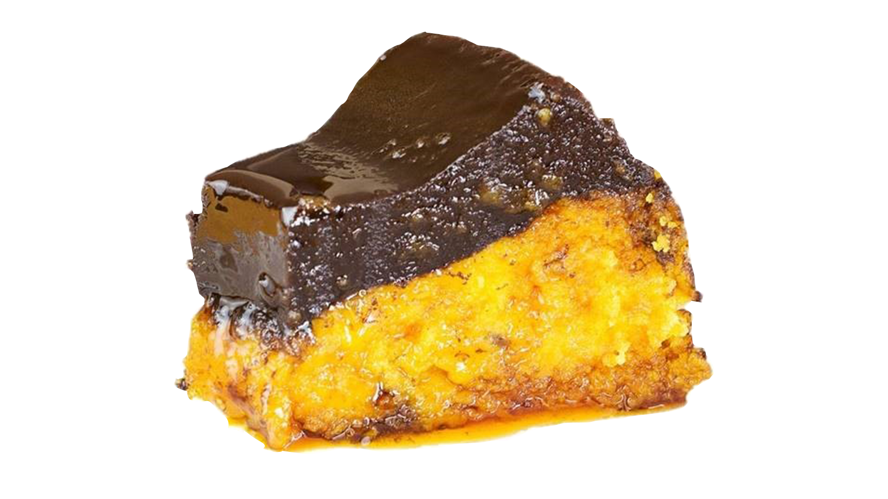

Bolo De Cenoura

Para O Bolo
Ingredientes
- 3 cenouras
- 4 ovos
- 1 xícara (chá) de óleo de milho
- 1 ½ xícara (chá) de açúcar
- 2 xícaras (chá) de farinha de trigo
- 1 colher (sopa) de fermento em pó
- 1 pitada de sal
- manteiga e farinha de trigo para untar e polvilhar a fôrma
Modo De Preparo
- Preaqueça o forno a 180 ºC (temperatura média). Unte uma fôrma redonda de 24 cm de diâmetro e 7 cm de altura com manteiga. Polvilhe com farinha de trigo, chacoalhe e bata sobre a pia para tirar o excesso.
- Numa tigela, coloque a farinha, o sal e o fermento, passando pela peneira. Misture e reserve.
- Lave e descasque as cenouras. Descarte a ponta da rama e corte as cenouras em rodelas.
- Numa tigela pequena, quebre um ovo de cada vez - para verificar se estão bons - e transfira para o liquidificador. Junte as cenouras, o óleo e o açúcar e bata bem até ficar liso, por cerca de 5 minutos.
- Junte, aos poucos, a mistura do liquidificador à tigela com os secos, mexendo delicadamente com um batedor de arame, para incorporar.
- Transfira a massa para a fôrma e leve ao forno para assar por cerca de 50 minutos. Para saber se o bolo está pronto, espete um palito na massa: se sair limpo, pode tirar do forno; caso contrário, deixe por mais alguns minutos, até que assar completamente. Deixe esfriar por 15 minutos antes de desenformar.
Para Cobertura
Ingredientes
- ½ xícara (chá) de chocolate em pó
- ⅓ de xícara (chá) de açúcar
- 1 colher (sopa) de manteiga
- ⅓ de xícara (chá) de água
Modo De Preparo
- Numa panela pequena junte o chocolate, o açúcar, a manteiga e a água. Leve ao fogo médio e mexa com o batedor de arame até ferver.
- Depois que começar a ferver, mexa por mais 4 minutos, até a calda engrossar e começar a desgrudar do fundo da panela. Regue a calda quente sobre o bolo frio (já desenformado) e deixe esfriar. Sirva a seguir.